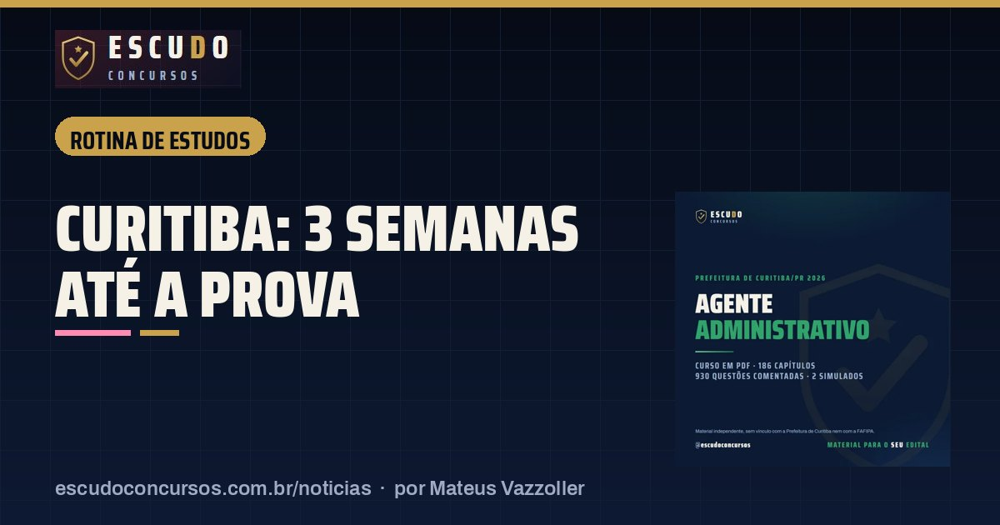

Cronograma Agente Administrativo de Curitiba: 3 semanas até a prova de 13/12/2026
Rotina de estudosPublicado em 24 de novembro de 2026 · por Mateus Vazzoller, ESCUDO Concursos

Quem se inscreveu para Agente Administrativo da Prefeitura de Curitiba tem, a partir desta terça, 24/11, três semanas até a prova objetiva da Fundação FAFIPA, no domingo, 13/12/2026. O local e o horário saem em 03/12. A prova tem 40 questões e aprova quem fizer 60 dos 100 pontos, ou seja, 24 acertos, sem nota mínima por área. Este plano usa essa regra a favor de quem tem pouco tempo: define uma meta de acertos por área e põe as horas onde elas rendem mais pontos.
| Cargo | Agente Administrativo da Prefeitura de Curitiba/PR (Edital Normativo nº 4/2026) |
|---|---|
| Banca | Fundação FAFIPA |
| Local e horário da prova | Divulgação em 03/12/2026 |
| Prova objetiva | 13/12/2026, fase única, 40 questões de A a E em 4 horas |
| Aprovação | 60 dos 100 pontos (24 acertos), sem mínimo por área |
| Tempo até a prova | 3 semanas, de 24/11 a 12/12/2026 |
Quantos acertos buscar em cada área?
Como não há mínimo por área, o caminho mais curto até os 24 acertos passa pelos Conhecimentos Específicos, que têm 20 das 40 questões. A meta abaixo soma 27 acertos, uma folga de três questões sobre o corte para absorver um chute errado ou uma questão difícil:
| Área | Questões | Meta de acertos | Onde estão os pontos |
|---|---|---|---|
| Conhecimentos Específicos | 20 | 14 | Direito Administrativo, Lei 14.133/2021, Lei Municipal 16.466/2024, Estatuto 1.656/1958, Arquivologia e redação oficial |
| Legislação | 5 | 4 | Lei Orgânica, Lei 1.656/1958, Lei 7.671/1991 e os artigos da Constituição citados no edital |
| Língua Portuguesa | 5 | 4 | Interpretação, concordância, pontuação e Literatura Brasileira |
| Raciocínio Lógico | 5 | 3 | Porcentagem, regra de três, juros simples e estatística básica |
| Noções de Informática | 5 | 2 | Windows, Word, Excel, segurança e IA generativa |
| Total | 40 | 27 |
A Lei 1.656/1958, o Estatuto dos Funcionários de Curitiba, aparece nas duas áreas mais pesadas: na Legislação e no processo disciplinar dos Específicos. É a lei que mais rende por hora de estudo neste edital.
Como dividir as três semanas?
O plano conta com cerca de 15 horas por semana: duas horas nos dias úteis e o resto no fim de semana. Quem tem mais tempo amplia as mesmas tarefas; quem tem menos corta primeiro Informática, que tem a menor meta.
| Semana | Período | Foco | Horas |
|---|---|---|---|
| 1 | 24/11 a 29/11 | Específicos: Direito Administrativo, Lei 14.133/2021, Lei 16.466/2024 e o processo disciplinar da Lei 1.656/1958 | 15 |
| 2 | 30/11 a 06/12 | Legislação municipal e federal, Português e Raciocínio Lógico; local da prova em 03/12 | 15 |
| 3 | 07/12 a 12/12 | Simulados de 40 questões, revisão dos erros e Informática | 15 |
Semana 1: os 20 pontos dos Específicos
Comece pelo que mais pesa. Reserve um dia para a Lei 16.466/2024, que trata do processo administrativo de Curitiba e não aparece em materiais de outras cidades. Leia prazos, quem instaura, quem decide e como recorrer. Feche a semana com o processo disciplinar da Lei 1.656/1958 e com 40 questões de Direito Administrativo, cronometradas.
Semana 2: Legislação, Português e Raciocínio Lógico
Na Legislação, leia a Lei Orgânica e a Lei 7.671/1991 procurando competências: o que é do Prefeito, o que é da Câmara e como se organiza o Executivo. Da Constituição, estude só os artigos listados no edital. Em Português, separe uma sessão para Literatura Brasileira, item que o Anexo II cobra e muita gente ignora. No Raciocínio Lógico, treine porcentagem e juros simples com questões de cinco alternativas. Na quinta, 03/12, confira no site da FAFIPA o local e o horário da sua prova e planeje o trajeto.
Semana 3: simulado e revisão
Faça pelo menos dois simulados completos de 40 questões em 4 horas seguidas, sem pausa. Depois de cada um, refaça as questões erradas e volte só aos tópicos que caíram. Encaixe Informática nesta semana, em sessões curtas. No sábado, 12/12, nada de conteúdo novo: revise suas anotações e separe o documento de identidade exigido no edital.
O que fazer depois da prova?
O gabarito preliminar e o caderno de questões saem em 14/12/2026, e o prazo de recurso contra o gabarito é de 15/12 a 16/12/2026. O programa completo, a tabela de pontos e as outras datas do edital estão no guia do concurso da Prefeitura de Curitiba.
Curso ESCUDO Agente Administrativo de Curitiba em PDF: 186 capítulos e 930 questões comentadas, 2 simulados no formato da prova, de acordo com o edital. De R$ 47 por R$ 37 com o cupom CURITIBA37 até 30/11/2026.
Ver o curso
Perguntas frequentes
Quando é a prova de Agente Administrativo de Curitiba?
No domingo, 13/12/2026, aplicada pela Fundação FAFIPA. O local e o horário são divulgados em 03/12/2026.
Quantas questões preciso acertar para passar?
24 das 40, que dão os 60 pontos exigidos. Não há nota mínima por área.
Três semanas são suficientes?
Para quem já começou, dá para fechar a meta se as horas forem para os Conhecimentos Específicos e a Legislação municipal, que juntos somam 25 das 40 questões.
Leia também
- Rotina de estudosCronograma de estudos Policial Penal PE: 16 semanas até a prova de 21/03/2027
25 de novembro de 2026 · Plano de 16 semanas para a prova do Cebraspe de 21/03/2027 para Policial Penal de Pernambuco: 15 horas por semana, Execução Penal primeiro e discursiva semanal.
- Rotina de estudosCronograma de estudos PM-PE Soldado: 13 semanas até a prova de 21/02/2027
22 de novembro de 2026 · Plano de 13 semanas para a prova do Instituto AOCP de 21/02/2027 para Soldado da PM de Pernambuco: 15 horas por semana, Bloco III primeiro e redação semanal.
- Rotina de estudosCronograma de estudos TJSP Escrevente: 16 semanas até a prova de 14/03/2027
20 de novembro de 2026 · Plano de 16 semanas para a prova da Vunesp de 14/03/2027 para Escrevente do TJSP: 15 horas por semana, Direito primeiro e uma redação por semana.
Guia completo do concurso: edital, vagas e o que cai · Mais notícias e dicas de concursos